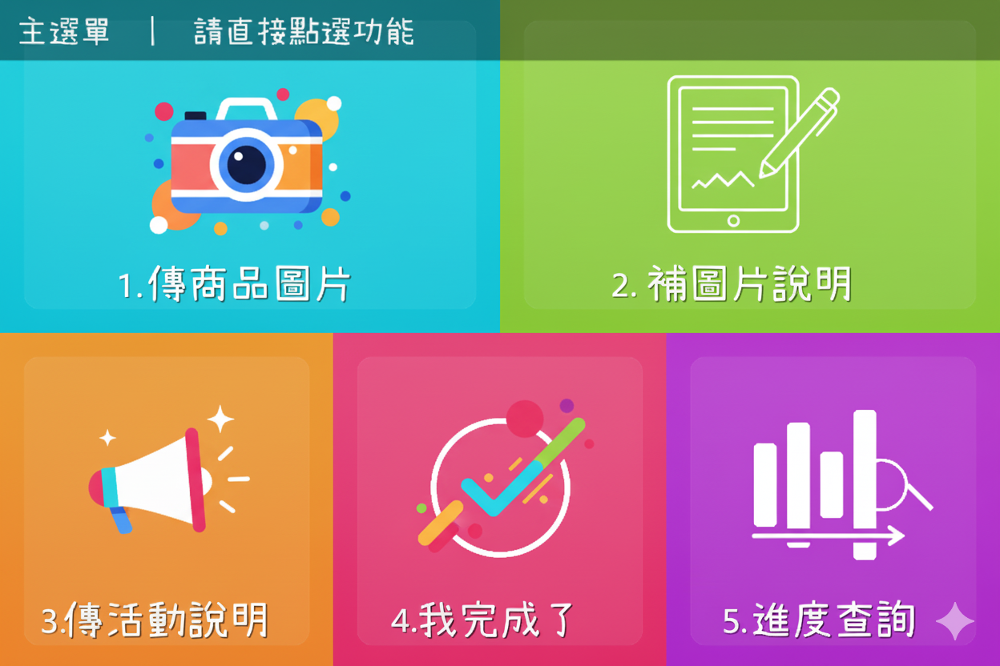
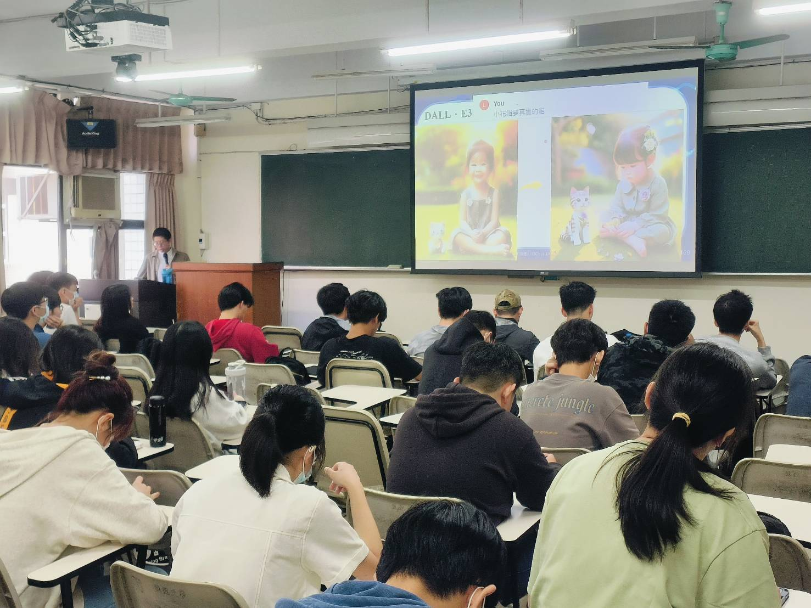
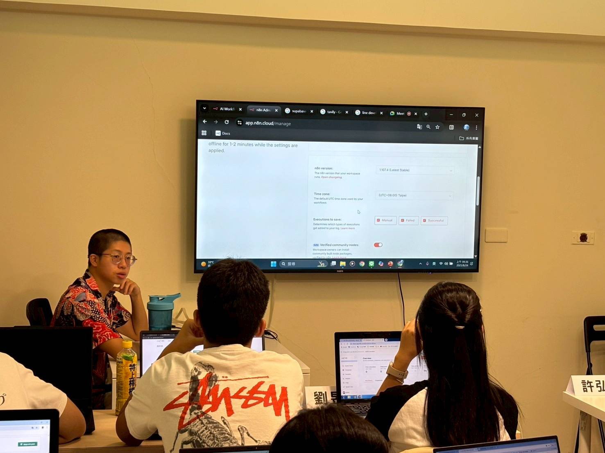
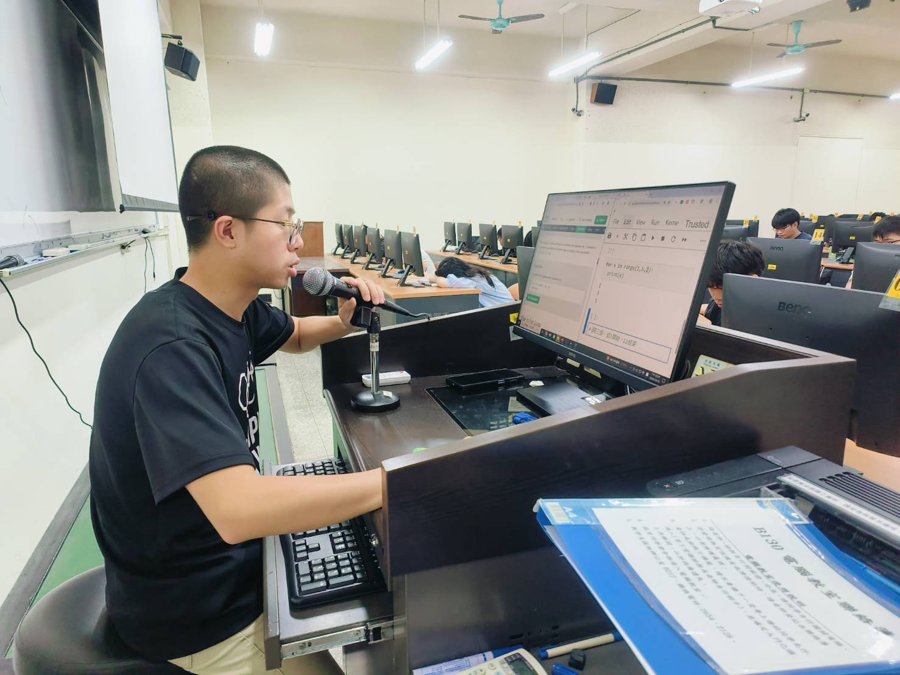

企業 AI 平台與應用架構
能與非技術合作方釐清需求，把抽象業務問題拆成使用者操作、AI 判斷、知識查詢、人工確認與外部工具，再以大型語言模型（LLM）、知識檢索增強生成（RAG）及多代理人（Multi-Agent）規劃完整服務流程。
AI 應用與 Agent 系統工程師
淡江大學資訊工程學系
智慧計算與應用碩士（2026）
聚焦自然語言 AI 系統，擅長把企業問題轉換成可操作的 AI 流程。曾將長篇顧客對話整理為可持續更新的客戶輪廓、以 n8n 流程自動化工具串起行銷影片製作，並建立多代理人會議系統核心框架。
碩士兩年間持續參與企業合作、產學提案與研究型專案，從與合作方釐清需求、拆解使用流程，到核心架構與後端整合，累積電商、行銷影音、會議與旅遊等場景的 AI 實作經驗；碩士論文研究多回合說服策略與失敗風險評估。
下載 PDF 履歷01
能與非技術合作方釐清需求，把抽象業務問題拆成使用者操作、AI 判斷、知識查詢、人工確認與外部工具，再以大型語言模型（LLM）、知識檢索增強生成（RAG）及多代理人（Multi-Agent）規劃完整服務流程。
針對影片生成與多代理人等耗時流程，採非同步等待、結果輪詢與狀態持久化；以任務識別碼追蹤進度，並規劃重試、失敗分支、續跑及人工介入，避免單一步驟異常使整條流程中斷。
依功能需求串接系統介面（API）、資料庫、模型與外部工具；以使用者、批次與項目識別碼分流請求，搭配資料列權限控管，建立 Multi-Tenant（多租戶）服務的隔離基礎。
依問題類型選擇關鍵字、語意或知識關聯查詢，證據不足時重新搜尋或補問條件；同時以測試記錄處理時間、模型費用及回答結果，作為檢索與流程調整依據。
工程工具：Docker（使用經驗）、Linux 基礎指令
02
2025–2026｜企業合作
將原本散落在長篇客服與銷售對話中的顧客需求、偏好、消費習慣及互動變化，自動整理成可持續更新的客戶輪廓，讓客服與行銷人員不必逐篇閱讀，也能快速掌握顧客狀態。
使用流程 匯入客服／銷售對話 → AI 擷取並合併顧客資訊 → 取得客戶輪廓與 Excel 報表
以大型語言模型從對話擷取資訊，依 13 類、56 欄資料規格合併新舊內容並輸出 JSON／Excel；對模型輸出格式異常及呼叫頻率限制加入解析修復與重試。
將單筆約 2 萬中文字的人工閱讀與整理轉為 30–50 秒的自動化處理，成本估算約 NT$2.20，建立客戶經營與行銷分析的資料基礎。
設計客戶輪廓擷取演算法、欄位規格與增量更新邏輯，完成批次後端及 JSON／Excel 輸出；前端由團隊成員負責。
2025｜產學合作
商家透過 LINE 提交廣告素材，系統以自動化互動流程依序完成文案、旁白、字幕與影片生成，並支援預覽、修改及重新產生，降低中小型商家製作廣告影片的技術門檻與跨工具操作成本。
使用流程 LINE 提交商品素材 → AI 產生文案、旁白與影片 → 商家預覽、修改或重新生成 → 完成交付
以 n8n 串接 LINE、生成式 AI、文字轉語音與影片服務；長時間生成採非同步等待與結果輪詢，並以使用者、批次及商品狀態追蹤 processing／ready／failed，支援失敗重試、續跑及重新生成。
把素材整理、內容生成、修改與交付整合為單一流程；以每月 20 支、每支原需 3–5 小時計，可涵蓋約 60–100 人時／月的製作流程。
主導需求拆解、核心 n8n 工作流與狀態機設計；整合生成服務、等待／輪詢、錯誤分支、人工確認，以及資料列權限控管，讓不同使用者的素材與任務彼此隔離。

2025｜研究型系統
讓 AI 不只是被動記錄會議，而是由多個具不同職責的 AI 代理人共同理解討論內容、查找所需知識、提出工具建議並判斷是否發言；會後再保留逐字稿與待辦，成為可參與會議的協作成員。
使用流程 進行即時語音會議 → 多個 AI 代理人依職責理解與判斷 → 保存逐字稿、任務及追蹤資訊
採多代理人角色分工，搭配即時語音、對話記憶、RAG 知識檢索與工具呼叫；以音訊佇列維持回覆順序，透過非同步事件、連線狀態及錯誤處理避免語音與資料流程互相阻塞。
將討論內容、知識查詢與會後任務串成同一資訊流程，降低資訊散落、重複整理與責任遺漏，並建立後續自動化基礎。
建立多代理人核心框架，定義角色、共享對話狀態與協作介面；整合即時語音、逐字稿、Webhook 事件、任務狀態及會議資料持久化。
03
COMPASS
Contrastive Outcome-guided Modeling of Path-Aware State Shifts for Persuasive Dialogue Systems
讓對話 AI 不只判斷「下一句怎麼說」，還能評估採用某個策略後，整段對話會更接近成功或更可能失敗。
根據對方的抗拒程度建立動態路徑圖，分別估計「推進目標」與「造成對話破局」的後續成本，再選擇下一步策略。
兩資料集 × 兩種 LLM 後端的四個受控評估條件中，相較 ASTRO，成功對話平均回合數皆縮短；風險權重實驗成功率 69.3%→78.2%，顯性失敗 24→12。
負責研究問題定義、COMPASS 方法與系統架構、模擬評估及結果分析。
04
2026｜智慧旅遊產學提案
旅客只需用日常語言說出想去的地點、時間、偏好與限制，系統便會主動補問缺少條件、搜尋旅遊知識與即時資訊，產生可持續修改的個人化行程。
關鍵方法：以意圖辨識理解目的、以填槽補齊日期與偏好；結合關鍵字與語意的混合檢索取得資料，當證據不足或條件缺漏時，由 AI 代理人補問、切換來源或重新搜尋後再調整行程。
企業效益：讓旅遊平台從固定條件搜尋升級為對話式規劃服務，減少使用者與客服反覆查找、比較及整理資訊的負擔。
我的貢獻：負責意圖驅動的知識檢索、資料融合、回應生成及驗測架構。
2025｜仁愛醫院合作研究
為醫療研究建立可重複的肝癌存活風險分析流程，以相同標準比較傳統統計、集成與深度學習模型，並解釋哪些特徵可能影響判斷。
關鍵方法：比較五類存活模型；以 C-index 衡量預測排序能力，並用 SHAP 說明各項特徵對模型判斷的影響。
研究效益：協助研究團隊辨識資料、小樣本及模型限制，作為後續研究與外部驗證依據；不作臨床部署宣稱。
我的貢獻：負責資料前處理、五類模型建置、驗證及結果分析。
05
協助世曦工程將台鐵場域的語音辨識、專有名詞校正與技術文件問答需求，轉化為可供招標及廠商評選使用的功能與技術規格；依不同查詢情境規劃關鍵字搜尋、語意檢索與知識圖譜（建立資料關聯）等處理方式。
研究方向包含多回合對話策略、LLM、AI Agent 與企業應用整合。
批改作業、提供部分期中／期末考題並帶領助教課。
協助高中二日營隊完成工作流與 AI 工具整合；另進行生成式 AI 通識分享與示範。




06
碩士期間以 7 件跨領域題目反覆練習在賽事時程內釐清使用者問題、收斂可行範圍，並把自然語言 AI、知識檢索與流程自動化整理成可展示、可說明價值的解決方案。
英文：TOEIC 650，可閱讀技術文件並進行基礎溝通。